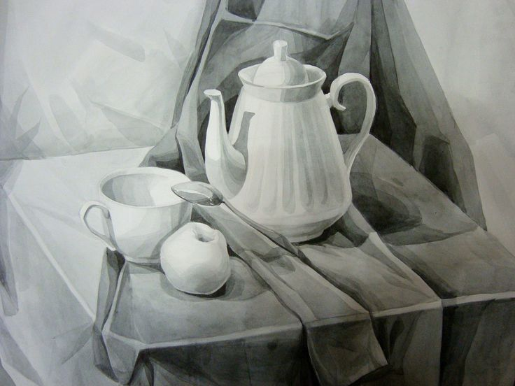
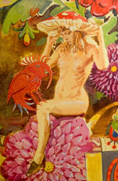

Существует огромное разнообразие стилей и направлений в изобразительном искусстве.
Часто они не имеют четко выраженных границ и плавно переходят из одного в другой, находясь в непрерывном развитии, смешении и противодействии.
В рамках одного исторического художественного стиля всегда зарождается новый, а тот, в свою очередь, переходит в следующий и т.д.
Многие стили сосуществуют одновременно и поэтому «чистых стилей» вообще не бывает.
Абстракционизм
(произошло от лат. abstractio – удаление, отвлечение) – направление искусства, отказавшееся от приближенного к действительности изображения форм в живописи и скульптуре. Одна из целей абстракционизма – достижение гармонии, создание определённых цветовых сочетаний и геометрических форм, чтобы вызвать у созерцателя разнообразные ассоциации. Главными представителями абстракционизма были: Василий Кандинский (1866-1944), Пабло Пикассо (1881-1973).
Авангардизм
(произошло от фр. avant-garde – передовой отряд) – совокупность экспериментальных, модернистских, подчеркнуто необычных, поисковых начинаний в искусстве 20 века. Авангардными направлениями являются: фовизм, кубизм, футуризм, экспрессионизм, абстракционизм, сюрреализм, акционизм, поп-арт, концептуальное искусство.
Академизм
(от фр. academisme) – направление в европейской живописи XVI-XIX веков. Основывалось на догматическом следовании внешним формам классического искусства. Последователи характеризовали этот стиль как рассуждение над формой искусства древнего античного мира и эпохи Возрождения. Академизм восполнял в себе традиции античного искусства, в которых идеализирован образ натуры, компенсируя при этом норму красоты. В этом стиле писали Аннибале, Агостино и Лодовико Карраччи.
Акционизм
(от англ. action art – искусство действия) – хэппенинг, перформанс, эвент, искусство процесса, искусство демонстрации и ряд других форм возникших в авангардистском искусстве 1960-х годов. В соответствии с идеологией акционизма художник должен заниматься организацией событий, процессов. Акционизм стремится стереть грань между искусством и действительностью. Наиболее известный представитель акционизма – Джексон Поллок.
Алла прима
(аля прим) (произошло от итал. alla prima – в первый момент) – разновидность техники масляной живописи, предусматривающая выполнение картины (или её фрагмента) за один сеанс, без предварительных прописок и подмалевка.
Ампир
(произошло от франц. empire – империя) – стиль в архитектуре и декоративном искусстве возникший во Франции в начале XIX в., в период Первой Империи Наполеона Бонапарта. Ампир – финал развития классицизма. Для воплощения величества, изысканности, роскоши, мощи и воинской силы Ампиру характерно обращение к античному искусству: древнеегипетским декоративным формам (военные трофеи, крылатые сфинксы…), этрусским вазам, помпейской росписи, греческому и римскому декору, ренессансных фрескам и орнаментам. Главным представителем этого стиля был Ж.Л.Давид (картины “Клятва Горациев” (1784), “Брут” (1789))
Анималистика
(произошло от лат. animal – животное) – жанр изобразительного искусства, в котором основным предметом изображения являются животные.
Аппликация
(произошло от лат. applicatio – прикладывание) – способ создания орнаментов, изображений путём наклеивания на холст разноцветных кусочков какого-либо материала.
Анахронизм
(от греч. ana – обратно и hronos – время), другое название – гиперманьеризм – одно из направлений постмодернизма, предлагающее авторскую интерпретацию искусства прошлого. Анахронизм возник в конце 1970-х гг. в Италии, позднее и во Франции. Мастера анахронизма: Карло Мария Мариани, Омар Галлиани, Луиджи Онтани, Стефано ди Стасио, Убальдо Бартолини, Антонио Аббате, Жан Гаруй.
Андеграунд
(от англ. underground – подполье, подземелье) – ряд художественных направлений в современном искусстве, противопоставляющих себя массовой культуре, мейнстриму. Андеграунд отвергает и нарушает принятые в обществе политические, моральные и этические ориентации и типы поведения, внедряя в повседневность асоциальное поведение. В советский период в силу строгости режима почти всякое неофициальное, т.е. не признанное властями, искусство оказывалось андеграундом
Арте повера

(от ит. arte povera – бедное искусство) – художественное направление, объединившее художников из Рима, Турина, Милана и Генуи во второй половине XXв. Художники арте повера визуализировали диалог между природой и индустрией, используя промышленные или нехудожественные материалы, хотели освободить творчество от ограничений традиционных форм искусства и художественного пространства, а также играли с политическим измерением индустриальных материалов. Движение стало заметным явлением на международной арт-сцене, находясь в противостоянии и диалоге с минимализмом в Америке, который также использовал индустриальные материалы. С точки зрения художников арте повера, минимализм занимался аспектами формы и не затрагивал поэтические, политические и исторические проблемы, которые были важны для арте повера. Арте повера не было объединением художников, имеющим свой манифест. Это было прежде всего движение, которое при помощи куратора и критика было признано и классифицировано в своей совокупности.
Ар нуво
(от фр. art nouveau, буквально – новое искусство) – распространённое во многих странах (Бельгия, Франция, Англия, США и др.) название стиля модерн. Самый известный художник этого направления живописи: Альфонс Муха.
Арт деко
(от фр. art deco, сокр. от decoratif)- направление в искусстве в середине 20 века, обозначившее синтез авангарда и неоклассицизма, пришло на смену конструктивизму. Отличительные признаки этого направления: усталость, геометрические линии, роскошь, шик, дорогие материалы (слоновая кость, крокодиловая кожа). Самым известным художником этого направления является Тамара де Лемпицка(1898-1980).
Аэрография
Техника живописного письма аэрографом (в переводе воздушная кисть – прибор для тонкого распыления краски сжатым воздухом) по трафарету.
Барокко
произошло от итал. barocco – странный, причудливый или от порт. perola barroca – жемчужина неправильной формы, существуют и другие предположения о происхождении этого слова) – художественный стиль в искусстве позднего Возрождения. Отличительные признаки этого стиля: преувеличенность размеров, изломанность линий, обилие декоративных подробностей, тяжесть и колоссальность.
Бидермейер
(от нем. biedermeier – простодушный, обывательский) – направление в немецком и австрийском искусстве, распространённое в 1815-1848 годах. Стиль является ответвлением романтизма, пришедшего на смену ампиру, поэтому его иногда называют смесь ампира с романтизмом. В бидермейере формы стиля ампир преобразовывались в духе интимности и домашнего уюта. Для стиля характерно тонкое, тщательное изображение интерьера, природы и бытовых деталей. Представители бидермейера в живописи: Г. Ф. Керстинг, Людвиг Рихтер, Карл Шпицвег, Мориц фон Швинд и Фердинанд Вальдмюллер.
Батальный жанр
(произошло от фр. bataille – битва) – жанр изобразительного искусства, в котором изображаются темы войны: сражения, военные походы.
Бытовой жанр
(жанровая живопись) – жанр изобразительного искусства, в котором изображаются обыденные сцены из повседневной жизни человека без прикрас.
Ванитас
(от лат. vanitas, букв. – «суета, тщеславие») – жанр живописи эпохи барокко, аллегорический натюрморт, композиционным центром которого традиционно является человеческий череп. Подобные картины, ранняя стадия развития натюрморта, предназначались для напоминания о быстротечности жизни, тщетности удовольствий и неизбежности смерти. Наибольшее распространение получил во Фландрии и Нидерландах в XVI и XVII веках, отдельные примеры жанра встречаются во Франции и Испании.
Ведута
жанр Венецианской живописи 18 века, в котором изображается городской пейзаж в виде панорамы, с соблюдением масштаба и пропорций. Великий представитель этого стиля в живописи – венецианский художник Каналетто (1697-1768). В России родоначальником архитектурной ведуты были живописцыФ.Я.Алексеев, М.Н.Воробьёв, С.Ф.Щедрин.
Веризм
(от итал. il verismo, от слова vero – истинный, правдивый) – реалистическое направление в итальянском изобразительном искусстве конца XIX века. Термин возник в XVII веке, употреблялся в изобразительном искусстве и обозначал реалистическую струю в живописи барокко. Затем термин возрождается во второй половине XIX века, являясь обозначением (весьма неопределёнными расплывчатым) реалистического и натуралистического направления в итальянском искусстве. Самыми известными художниками этого направления являютсяДж. Фаттори, С. Лега, Т. Синьрини, О. Боррани, В. Кабьянка,Дж. Аббати и др.
Возрождение
или РЕНЕССАНС (от фр. renaissance, итал.rinascimento) – эпоха в истории культуры Европы, пришедшая на смену культуре Средних веков и предшествующая культуре нового времени. Примерные хронологические рамки эпохи – XIV-XVI века. Отличительная черта эпохи возрождения – светский характер культуры и её антропоцентризм (то есть интерес, в первую очередь, к человеку и его деятельности). Появляется интерес к античной культуре, происходит как бы её «возрождение» – так и появился термин. Рисуя картины традиционной религиозной тематики, художники начали использовать новые художественные приёмы: построение объемной композиции, использование пейзажа на заднем плане, что позволило им сделать изображения более реалистичными, оживленными. Это резко отличало их творчество от предыдущей иконографической традиции, изобилующей условностями в изображении. Наиболее известные художники этого периода: Сандро Боттичелли (1447-1515),Леонардо да Винчи (1452-1519), Рафаэль Санти (1483-1520),Микеланджело Буонарроти (1475-1564), Тициан (1477-1576),Антонио Корреджо (1489-1534), Иероним Босх (1450-1516),Альбрехт Дюрер (1471-1528).
Геометрический абстракционизм
вид абстрактного искусства, композиции которого построены из ограниченного набора правильных форм и основных цветов.
Гиперреализм
ФОТОРЕАЛИЗМ, СУПЕРРЕАЛИЗМ – стиль в живописи и скульптуре, основанный на фотореализации объекта. Гиперреализм возник в США в середине 20 века. Главная цель гиперреализма показать действительность.
Городской пейзаж
(архитектурный пейзаж) – жанр изобразительного искусства, в котором основным предметом изображения являются городские улицы, здания.
Готика
(произошло от итал. gotico – непривычный, варварский) – период в развитии средневекового искусства, охватывавший почти все области культуры и развивавшийся на территории Западной, Центральной и отчасти Восточной Европы с XII по XV век. Готика завершила развитие европейского средневекового искусства, возникнув на основе достижений романской культуры, а в эпоху Возрождения искусство средневековья считалось «варварским». Готическое искусство было культовым по назначению и религиозным по тематике. Оно обращалось к высшим божественным силам, вечности, христианскому мировоззрению. Готика в своем развитии подразделяется на Раннюю готику, Период расцвета, Позднюю готику.
Графика
искусство изображения предметов контурными линиями и штрихами. Иногда в графике допускается применение цветных пятен, но здесь они играют вспомогательную роль.
Гризайль

(произошло от фр. grisaille, от gris – серый) – вид декоративной живописи, выполняемой в разных оттенках какого-либо одного цвета (чаще серого). Гризайль применяется с 17 века, широко распространена в росписях интерьеров классицизма, главным образом как имитация скульптурного рельефа.
Дадаизм
(произошло от фр. dadaisme, dada – деревянная лошадка; в переносном смысле – бессвязный детский лепет) – модернистское литературно-художественное течение 1916-1922 годов, для которого характерны сознательный иррационализм и демонстративный антиэстетизм. Зародился во время Первой мировой войны в Цюрихе (Швейцария), как реакция на последствия войны, жестокость которой, по мнению дадаистов, подчеркнула бессмысленность существования. Рационализм и логика объявлялись одними из главных виновников опустошающих войн и конфликтов. Исходя из этого, дадаисты считали, что современную европейскую культуру необходимо уничтожить через разложение искусства. Самые известные дадаисты: Ханс Арп (1886-1966), Марсель Дюшан (1887-1968),Макс Эрнст (1891-1976), Филипп Супо (1897-1990), Тристан Тцара (1896-1963).
Декоративная живопись
живопись, созданная с целью украшения интерьера или дополнения к дизайну помещения.
Дивизионизм
(от франц. division – разделение), пуантилизм – направление неоимпрессионизма, письмо раздельными четкими мазками в виде точек или мелких квадратов. Смешение цветов с образованием оттенков происходит на этапе восприятия картины зрителем. Самые известные художники, писавшие в этом стиле:Жорж Сёра (1859 – 1891), Поль Синьяк (1863-1935), Анри Матисс (1869-1954), Камиль Писсарро, Люсьен Писсарро, Анри Эдмон Кросс, Шарль Теофил Ангран, Максимилиан Люс, Ипполит Птижан, Жорж Леммен, Тео Ван Риссельберге, Джованни Сегантини, Николай Мещеряков.
Импрессионизм
(от фр. impression – впечатление) – направление в европейской живописи, зародившееся во Франции в середине 19 века. Импрессионисты избегали всяких подробностей в рисунке и пытались уловить общее впечатление от того, что видит глаз в конкретный момент. Этого эффекта они достигали при помощи цвета и фактуры. Самые известные художники этого направления живописи: Мане, Ренуар, Сезанн, Дега, Моне, Писсарро.
Караваджизм
стиль европейской живописи эпохи барокко, появившийся в Риме в конце XVI века. Основоположником этого стиля считается Караваджо. Караваджо оказал огромное влияние на развитие европейской реалистической живописи.
Революция Караваджо в области формы и иконографии живописи явилась результатом радикального изменения отношений между художником и внешним миром. Для караваджизма характерны: демократизм художественных идеалов; интерес к непосредственному воспроизведению натуры; драматизация изображения с помощью контрастов света и тени; стремление передать ощущение осязаемой материальности предметов; крупные планы; монументализация жанровых мотивов; бытовая трактовка религиозных и мифологических сюжетов.
Китч
кич (от нем. kitsch – безвкусица) – термин, обозначающий одно из наиболее одиозных явлений массовой культуры, синоним псевдоискусства, в котором основное внимание уделяется экстравагантности внешнего облика, крикливости его элементов. По сути, китч – разновидность постмодернизма. Китч – это массовое искусство для избранных. Произведение, принадлежащее к китчу, должно быть сделано на высоком художественном уровне, в нем должен быть увлекательный сюжет, но это не настоящее произведение искусства в высоком смысле, а искусная подделка под него. В китче могут быть глубокие психологические коллизии, но там нет подлинных художественных открытий и откровений.
Классицизм
(произошло от лат. classicus – образцовый) – художественный стиль и эстетическое направление в европейской литературе и искусстве 17 – начала 19 вв., одной из важных черт которых являлось обращение к образам и формам античной литературы и искусства, как идеальному эстетическому эталону. Художественное произведение, с точки зрения классицизма, должно строиться на основании строгих канонов, тем самым, обнаруживая стройность и логичность самого мироздания. Интерес для классицизма представляет только вечное и неизменное. В каждом явлении он стремится распознать только существенные, типологические черты, отбрасывая случайные индивидуальные признаки. Эстетика классицизма придаёт огромное значение общественно-воспитательной функции искусства. Многие правила и каноны классицизм берет из античного искусства.
Клуазонизм
(от фр. cloison – перегородка) – термин, перенесенный в живопись из прикладного искусства. Суть данной системы заключается в том, что все полотно разделяется на несколько плоскостей разного цвета в соответствии с изображаемыми фигурами или предметами. Каждая из этих плоскостей очерчивается причудливо изгибающейся широкой контурной линией, как в витражах свинцовыми перегородками. Главная роль в клуазонизме отводится чистым контрастным цветам, которые придают живописной плоскости особый декоративный эффект, поднимая линию горизонта и разрушая привычную перспективу натурного пространства. Фигуры уплощаются и становятся похожими на тени. Эта манера письма разработана Эмиль Бернаром и Л.Анкетеном в 1887 г.
Конструктивизм
направление в советском искусстве 20-х гг. ХХ в. Сторонники конструктивизма, выдвинув задачу конструирования окружающей среды, активно направляющей жизненные процессы, стремились осмыслить формообразующие возможности новой техники, ее логичных, целесообразных конструкций, а также эстетические возможности таких материалов, как металл, стекло, дерево. Показной роскоши конструктивисты стремились противопоставить простоту и подчеркнутый утилитаризм новых предметных форм, в чем они видели овеществление демократичности и новых отношений между людьми.
Космизм
(от греч. kosmos – организованный мир, kosma – украшение) – художественно-философское мировоззрение, в основе которого располагается знание о Космосе и представление о человеке как о гражданине Мира, а также о микрокосмосе, подобном Макрокосмосу. Космизм связан с астрономическими знаниями о Вселенной.
Кубизм
(от фр. cubisme, произошло от cube – куб) – модернистское направление в живописи начала ХХ века, которое выдвинуло на первый план формальную задачу конструирования объёмной формы на плоскости, сведя к минимуму изобразительно-познавательные функции искусства. Слово “кубисты” было употреблено в 1908 и 1909 французским критиком Л. Воселем как насмешливое прозвище группы художников, изображавших предметный мир в виде комбинации геометрических тел или фигур. Самый известный художник этого направления живописи: Пабло Пикассо (1881-1973).
Кубофутуризм
направление в искусстве авангарда в начале ХХ века, соединившее в себе наработки итальянских футуристов и французских кубистов.
Самые известные художники кубофутуризма: Казимир Малевич,Давид Бурлюк, Иван Клюин, Александра Экстер, Наталья Гончарова, Надежда Удальцова, Любовь Попова, Ольга Розанова, Иван Пуни.
Лоуброу арт
ПОП-СЮРРЕАЛИЗМ (от англ. lowbrow – малообразованный, непритязательный) – направление в изобразительном искусстве, возникшее в Лос-Анджелесе в конце 1970-х годов. На становление лоуброу арта повлияли панк-музыка, поп-искусство и другие субкультуры. У истоков движения стояли подземные карикатуристы Роберт Уильямс и Гэри Пэнтер, и художники Гэри Байсмэн и Тим Бискуп.)
Лучизм
живописное направление в русском искусстве 1910-х гг. Придумали этот стиль М. Ф. Ларионов и Н.С. Гончарова.
Лучизм это абстрактное искусство, основанное на вмещение световых спектров и светопередачи.
Маньеризм
(от итал. manierismo, от maniera – манера, стиль) – стиль в искусстве, основанный на усвоении манеры какого-нибудь большого мастера или определенной художественной школы.
Метареализм
(произошло от греч. meta – между, после, через и геalis – вещественный, действительный) – реализм многих реальностей, связанных непрерывностью метаболических превращений и перемен состояний. Есть реальность, открытая зрению муравья, и реальность, открытая блужданию электрона, и реальность, свёрнутая в математическую формулу. Метареальный образ, метаморфоза, метабола – способ взаимосвязи всех этих реальностей, утверждение их растущего единства.
Мизерабилизм
(от фр. miserable – несчастный) – направление изобразительного искусства, зародившееся во Франции после 1940-х годов. В рамках данного направления, на первое место выносятся принципы фигуративности, сюжетно-драматическое начало в живописи и графике, с подчеркиванием трагической обреченности, «покинутости» человека в мире. Основоположником мизерабилизма считается Франсис Грюбер.
Минимализм
(произошло от англ. minimal art – минимальное искусство) – художественное течение, исходящее из минимальной трансформации используемых в процессе творчества материалов, простоты и единообразия форм, монохромности, творческого самоограничения художника. Для минимализма характерен отказ от субъективности, репрезентации, иллюзионизма. Отвергая классические приемы и традиционные художественные материалы, минималисты используют промышленные и природные материалы простых геометрических форм и нейтральных цветов (черный, серый), малых объемов, применяют серийные, конвейерные методы индустриального производства. Минимализм возник в США в первой половине 60-х гг. Среди наиболее репрезентативных минималистов: К. Андре, М. Бочнер,У. Де Мариа, Д. Флэвин, С. Ле Витт, Р. Мэнголд, Б. Мэрден, Р. Моррис, Р. Раймэн.
Модерн
(произошло от фр. moderne – новейший, современный) – cтиль в европейском и американском иcкyccтвe нa pyбeжe XIX-XX вeкoв. Модерн переосмысливал и стилизовал черты искусства разных эпox, и выpaбoтaл coбcтвeнныe xyдoжecтвeнныe пpиeмы, ocнoвaнныe нa пpинципax асимметрии, орнаментальности и декоративности. Его отличительными особенностями являются: отказ от прямых линий и углов в пользу более естественных, природных линий. Этим oбъяcняeтcя нe тoлькo интepec к pacтитeльным opнaмeнтaм в пpoизвeдeнияx мoдepнa, нo и caмa иx кoмпoзициoннaя и плacтичecкaя cтpyктypa – oбилиe кpивoлинeйныx oчepтaний, oплывaющиx, нepoвныx кoнтypoв, напоминающих pacтитeльныe фopмы. Художники, писавшие в стиле модерн: Поль Гоген (1848-1903), Густав Климт (1862-1918).
Модернизм
(произошло от итал. modernismo – «современное течение») – общее название направлений искусства и литературы конца 19-20 века: кубизм, дадаизм, сюрреализм, модерн, футуризм, экспрессионизм, абстрактное искусство, функционализм, неоимпрессионизм, постимпрессионизм и т. п.
Натюрморт
(в переводе с фр. – мертвая, неодушевленная натура) – это художественное изображение различных предметов быта. Ими могут быть: посуда, домашняя утварь, фрукты, овощи, цветы, дичь или любое их сочетание. Самые известные школы в написание натюрморта – фламандская и голландская, в которых по-своему решили задачу передачи цвета и композиции.
Наив, наивное искусство
изобразительные виды народного искусства; творчество художников-самоучек; а также самодеятельное искусство.
Натурализм
(произошло от лат. naturalis – природный) – направление в литературе и искусстве последней трети 19 века, стремившееся к объективно точному и бесстрастному воспроизведению наблюдаемой реальности. Считается, что натурализм воспроизводит реальность без ее идейного осмысления, художественного обобщения, критической оценки и отбора.
Неоклассицизм
Де Стиль – термин, обозначающий художественные явления последней трети XIX-XX вв., которым присуще обращение к традициям античного искусства, искусства эпохи Возрождения или классицизма. Возникновение неоклассицизма обусловлено стремлением противопоставить некие “вечные” эстетические ценности тревожной и противоречивой реальности. Самый известный художник этого направления живописи: Адольф Вильям Бугро (1825-1905)
Неопластицизм
одна из ранних разновидностей абстрактного искусства. Создан к 1917 году нидерландским живописцем П. Мондрианом и др. художниками входившими в объединение “Стиль”. Для неопластицизма характерно, по словам его создателей, стремление к “универсальной гармонии”, выразившееся в строго уравновешенных комбинациях крупных прямоугольных фигур, четко разделенных перпендикулярными линиями черного цвета и окрашенных в локальные цвета основного спектра (с добавлением белого и серого тонов).
Неореализм
художественное направление, получившее развитие в изобразительном искусстве в середине XX века в ряде стран Европы и в США, представители которого на фоне модернистского искусства провозгласили возврат к реалистическим ценностям традиционных изобразительных форм.
Ню
(произошло от фр. nu – нагой, раздетый) – один из жанров изобразительного искусства, посвященный изображению нагого тела, преимущественно женского. В своём развитии ню тесно связан с изображением обнажённого человеческого тела и воплощает идеал красоты данной страны и эпохи. Ню зарождается в эпоху Возрождения в рамках мифологического, аллегорического, исторического и бытового жанров. Формирование ню как жанра происходит в 17 веке с распространением идей сенсуализма: изображения нагого тела проникаются откровенно чувственным началом.
Оп-Арт
(от англ. ор art, сокращение от optical art – оптическое искусство) – неоавангардистское течение в изобразительном искусстве, одна из поздних модификаций абстрактного искусства. В оп-арте эффекты пространственного перемещения, слияния и “парения” форм достигались введением резких цветовых и тональных контрастов, ритмических повторов, пересечения спиралевидных и решетчатых конфигураций, извивающихся линий.
Орфизм
(от фр. orphisme, от Orpһée – Орфей) – направление во французской живописи 1910-х гг. Название дано в 1912 французским поэтом Аполлинером живописи художника Робер Делоне. Орфизм связан с кубизмом, футуризмом и экспрессионизмом. Основные особенности живописи этого стиля эстетизм, пластичность, ритмичность, изящество силуэтов и линий.
Мастера орфизма: Робер Делоне, Соня Терк-Делоне,Франтишек Купка, Франсис Пикабиа, Владимир Баранов-Россине, Фернан Леже, Морган Рассел.
Парсуна
(искаженное лат. persona – личность, особа) – первоначально синоним современного понятия портрет вне зависимости от стиля, техники изображения, места и времени написания. Понятие парсуна в значении произведения переходного периода от иконописи к светской портретной живописи предложено И.М. Снегирёвым в 1854 году.
Пастораль
(произошло от фр. pastorale, пастушеский, сельский) – жанр поэтизирующий мирную и простую сельскую жизнь.
Примитивизм
стиль живописи, зародившийся в XIX-XX веках. Примитивисты намеренно упрощали картину, делая её формы примитивными, как народное искусство, творчество ребенка или первобытного человека. Основное отличие от наивного искусства: наив – живопись непрофессионалов, а примитивизм – стилизованная живопись профессионалов. Самыми известными художниками этого направления являются Марк Шагал, Нико Пиросмани.
Поп-арт
(произошло от англ. popular art – популярное, общедоступное искусство или от pop – отрывистый звук, лёгкий хлопок) – буквально: искусство, производящее взрывной, шокирующий эффект – неоавангардистское направление в изобразительном искусстве. Поп арт получил распространение со 2-й половины 1950-х гг. в США. Художники этого направления воспроизводят буквально типичные предметы современного быта (вещи домашнего обихода, упаковку товаров, фрагменты интерьеров, детали машин…), популярные печатные изображения известных личностей, вырезки из газет или включают эти предметы и изображения в композиции. Отличительная черта поп-арта – сочетание вызова с безразличием. Все одинаково ценно или бесценно, одинаково красиво или безобразно, одинаково достойно или недостойно. Самые известные художники поп арта: Джаспер Джонс, Роберт Раушенберг и Энди Уорхол.
ПОРТРЕТ
(произошло от фр. слова portrait) – это художественное изображение человека с передачей его внутреннего мира. Делится на индивидуальный, групповой, парадный, автопортрет.
Постимпрессионизм
(произошло от фр. postimpressionisme, от лат. post – после и импрессионизм) – совокупность направлений, возникших во французском искусстве во второй половине 1980-х годов и пришедших на смену импрессионизму. Началом постимпрессионизма принято считать середину 1880-х, когда состоялась последняя выставка импрессионистов и был опубликован Манифест символизма (1886) поэта Жана Мореаса. Новые течения декларировали неприятие эстетики импрессионизма и реализма. Их объединяла готовность передавать в картинах не сиюминутные, но длительные, сущностные состояния жизни, как материальные, так и духовные. Поиски шли различными путями: это и пуантилизм (Жорж Сёра,Поль Синьяк), и символизм Поля Гогена.
Постмодернизм

(произошло от фр. postmodernisme – после модернизма) – новый художественный стиль, отличающийся от модернизма возвратом к красоте вторичной реальности, повествовательности, обращением к сюжету, мелодии, гармонии вторичных форм. Для постмодернизма характерно заимствование из разных эпох, регионов и субкультур стилей, образных мотивов и художественных приемов.
Прерафаэлитизм
(произошло от англ. pre перед и raphaelitism – Рафаэль) – эстетико-мистическое направление в английской поэзии и живописи во второй половине XIX в, образовавшееся в начале 50-х годов с целью борьбы против условности в английском искусстве викторианской эпохи, против академических традиций и слепого подражания классическим образцам
Проторенессанс
(произошло (от греч. protos – первый и фр.Renaissance – Возрождение) – переходное направление в итальянском искусстве от эпохи Средневековья к эпохе Возрождения.
Пуантилизм
(дивизионизм) (произошло от фр. pointiller – писать точками) – направление неоимпрессионизма, письмо раздельными четкими мазками в виде точек или мелких квадратов. Смешение цветов с образованием оттенков происходит на этапе восприятия картины зрителем. Самые известные художники, писавшие в этом стиле: Жорж Сёра (1859 – 1891), Поль Синьяк (1863-1935), Анри Матисс (1869-1954).
Пуризм
(от фр. pur – чистый) – направление в живописи и архитектуре XX века, ищущее при создании своих произведений эстетической ясности, точности, подлинности в изображении. Это течение было создано французским художником Амеде Озенфаном и архитектором Ле Корбюзье в 1918 году с написанием ими художественного манифеста «После кубизма». Идеальной пропорцией в пуризме рассматривается золотое сечение и отвергается декоративность и манерность.
Реализм
(произошло от лат. геalis – вещественный, действительный) – направление в искусстве, характеризующееся изображением социальных, психологических и прочих явлений, максимально соответствующим действительности. Самые известные реалисты: Илья Репин, Иван Шишкин, Василий Поленов, Василий Суриков, Исаак Левитан.
Рококо
(происходит от фр. rococo, rocaille) – стиль в искусстве и архитектуре, зародившийся во Франции в начале 18 века. Отличался грациозностью, легкостью, интимно-кокетливым характером. Придя на смену тяжеловесному барокко, рококо явился одновременно и логическим результатом его развития, и его художественным антиподом. Со стилем барокко рококо объединяет стремление к завершённости форм, однако если барокко тяготеет к монументальной торжественности, то рококо предпочитает изящество и лёгкость.
Романтизм
(произошло от фр. romantisme) – идейное и художественное направление в европейской и американской живописи конца 18 – начала 19 веков, выдвигавшее на первый план индивидуальность, наделяя ее идеальными устремлениями. Романтизм выделял главенство воображения и чувств. Его основная социально-идеологическая предпосылка – разочарование в буржуазной цивилизации, в социальном, промышленном, политическом и научном прогрессе. Самые известные живописцы этого жанра: Э. Делакруа, И.К. Айвазовский (1817-1900).
Иппический жанр
(произошло от греч. hippos – лошадь) – жанр изобразительного искусства, в котором главным мотивом является изображение лошади.
Исторический жанр
жанр изобразительного искусства, посвященный историческим событиям и деятелям, а также социально значимым явлениям в истории общества.
Каприччо
(произошло от итал. capriccio, буквально – каприз, прихоть) – архитектурный пейзаж-фантазия. Самые известные художники писавшие каприччо: Франческо Гварди, Антонио Каналетто.
Марина
МОРСКОЙ ПЕЙЗАЖ (произошло от фр. marine, итал.marina, от лат. marinus – морской) – жанр изобразительного искусства, изображающий морской вид. Яркий представитель этого жанра – И.К.Айвазовский (1817-1900).
Сентиментализм
(произошло от лат. sentiment – чувство) – направление западного искусства второй половины XVIII., выражающее разочарование в цивилизации, основанной на идеалах разума. Сентиментализм провозглашает чувство, уединенное размышление, простоту сельской жизни “маленького человека”. Идеологом сентиментализма считается Ж.Ж.Руссо. Художники, писавшие в этом жанре: Я.Ф. Хаккерт, Р.Уилсон, Т.Джонс, Дж.Форрестер, С.Дэлон.
Символизм
(происходит от фр. symbolisme) – одно из крупнейших направлений в искусстве (в литературе, музыке и живописи), возникшее во Франции в 1870-80-х гг. и достигшее наибольшего развития на рубеже XIX и XX веков, прежде всего в самой Франции, Бельгии и России. Символисты радикально изменили не только различные виды искусства, но и само отношение к нему. Их экспериментаторский характер, стремление новаторству, космополитизм и обширный диапазон влияний стали образцом для большинства современных направлений искусства. Художники символисты: Обри Бердслей, Михаил Врубель.
Стрит-арт
(от англ. street art – уличное искусство) – искусство, получившее развитие на улицах и в городских публичных местах. Включает в себя граффити, тэги, трафаретное граффити, стикер-арт, постеры, видео проекции, флэш-мобы и уличные инсталляции.